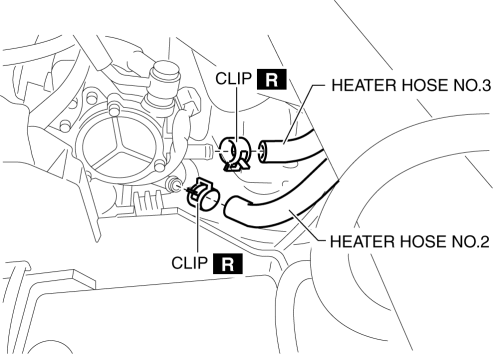

< Previous
Next >
2014 -
Mazda6 -
HVAC
HEATER HOSE REMOVAL/INSTALLATION
With Water Temperature Sensor
1. Remove the battery. (See BATTERY REMOVAL/INSTALLATION [SKYACTIV-G 2.5].)
2. Drain the engine coolant. (See ENGINE COOLANT REPLACEMENT [SKYACTIV-G 2.5].)
3. Remove the insulator.
4. Remove the clips and remove the heater hose.

5. Remove the heater hose.
6. Install in the reverse order of the removal.
7. Inspect for engine coolant leakage. (See ENGINE COOLANT LEAKAGE INSPECTION [SKYACTIV-G 2.5].)
Without Water Temperature Sensor
1. Remove the battery. (See BATTERY REMOVAL/INSTALLATION [SKYACTIV-G 2.5].)
2. Drain the engine coolant. (See ENGINE COOLANT REPLACEMENT [SKYACTIV-G 2.5].)
3. Remove the insulator.
4. Remove the clips and remove the heater hose.
5. Install in the reverse order of the removal.
6. Inspect for engine coolant leakage. (See ENGINE COOLANT LEAKAGE INSPECTION [SKYACTIV-G 2.5].)
< Previous
Next >
© 2012 Mazda North American Operations, U.S.A.